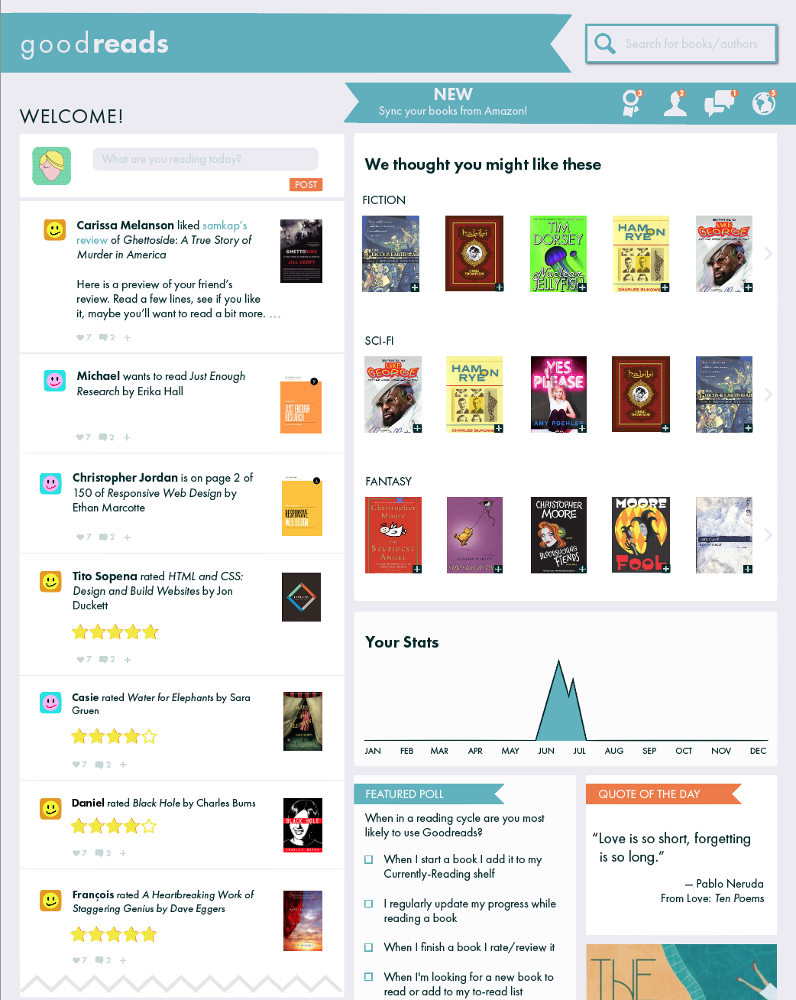

<div class="post-container">
	<div class="project">
		<h2>GOODREADS WEBSITE REDESIGN</h2>
		<h4>View the <a href="http://stclair.design/goodreads-style-guide/">Style Guide</a> or check it out on <a href="https://github.com/andreastclair/goodreads-style-guide">Github</a><h4>

		
		<h2>ABOUT THIS PROJECT</h2>
		<p>This project is a redesign of the website Goodreads. Goodreads is a social site for readers and authors to find and share books that they love. With a Goodreads account, a user can build personal libraries with multiple shelves, track their reading progress, and find and recommend other titles to and from their friends.</p>
		<p>The current Goodreads site is too cluttered. There is a lack of overall hierarchy which makes navigation confusing. With all of the site's features displayed, it's difficult for the user to tell what's the most important and where their attention should go first. There is no clear difference in type treatment for links.</p>
		<p>My goals were to define the hierarchy on three pages: The homepage, a user profile and a bookshelf. I wanted to make the site easier to navigate by reducing clutter and consolodating some of the features into other menus.</p>
		<p>I chose a theme of Achievements for my redesign. I focused on vibrant colors and creating a page that encouraged users to continue to visit the site to update their reading statuses by rewarding them with badges for their progress.</p>
		<div class="list-container">
			<h4>Toolkit:</h4>
			<ul>
				<li>Adobe Illustrator</li>
				<li>User Research</li>
				<li>User Analysis</li>
			</ul>
		</div>	

		<div class="side-by-side">
			<div class="desktop-row">
				<p>BEFORE</p>
				
			</div>
			<div class="desktop-row">	
				<p>AFTER</p>
				
			</div>
		</div>	

			<div class="clear-fix"></div>
		
	</div>	
</div>
	
	


